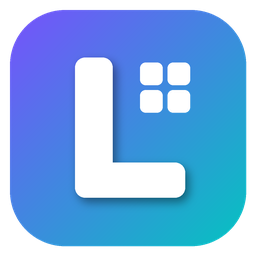

Ohne Token erlaubt GitHub 60 Abfragen pro Stunde – das reicht meist, weil unveränderte Antworten nicht zählen. Mit Token sind es 5000, und private Repos werden mit angezeigt. Der Token bleibt nur auf diesem Rechner. Token erstellen
Hier siehst du alle deine Apps von GitHub an einem Ort – installieren, aktualisieren und starten mit einem Klick.
Farbige Kacheln haben ein Release – klick drauf für Beschreibung, Download und Start.
Ausgegraute Kacheln sind Repos ohne Release; sie werden aktiv, sobald du eins veröffentlichst.
LakuenSuite prüft beim Start, ob es neue Versionen gibt, aktualisiert deine Apps (abschaltbar) und sich selbst per Knopfdruck. Jeder Download wird per SHA-256 geprüft.
Tipps: Strg+F sucht, F5 aktualisiert, Pfeiltasten + Enter funktionieren auch mit dem Controller.